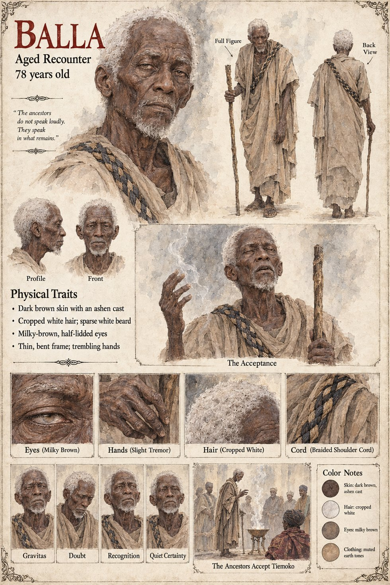

Balla
Aged Recounter · declares the sign at Tiemoko's Weighing · 78 years old on his sheet
One sentence in Chapter Five, and the sentence carries a coronation. The Weighing of Tiemoko is the one the histories describe at length, because it was the last one anyone would remember as simple. The elders had settled the matter in private three years before, there was no rival, and the sign, when it came, was a thread of smoke from the sacrificial fire that hesitated, bent east, and was declared by the aged Recounter Balla to be acceptance. The court exhaled.
He is the only Recounter the manuscript shows declaring a sign for a king. The book sets down the arrangement as it stood: in the four hundred years the Recounters could account for, the Weighing had never once put a question to the ancestors whose answer was not already known to everyone present. Balla's reading costs nothing, because nobody present needs the smoke to say anything but yes. At the next Weighing the smoke rises straight up and then splits, the bull sits down, and the Chief Recounter is Fode, who declares nothing. The manuscript does not say whether Balla was the senior Recounter who recited Tiemoko's line, what rank he held, or what became of him; the Chief Recounter before Fode is Nyeleni, and the manuscript does not connect the two.
The manuscript gives his name and his epithet, aged. The sheet's age of 78, dark brown skin with an ashen cast, cropped white hair, sparse white beard, milky-brown half-lidded eyes, thin bent frame, trembling hands, staff and braided shoulder cord are its own. It prints a line for him, The ancestors do not speak loudly. They speak in what remains., which is not in the manuscript. Its scenes, The Acceptance and The Ancestors Accept Tiemoko, draw him before the fire with a thread of smoke rising; its panels are Gravitas, Doubt, Recognition and Quiet Certainty.
“declared by the aged Recounter Balla to be acceptance”